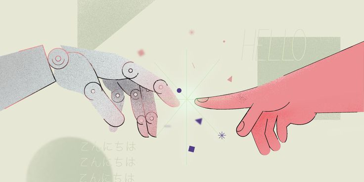
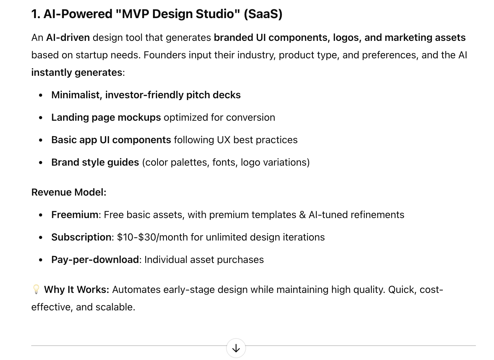
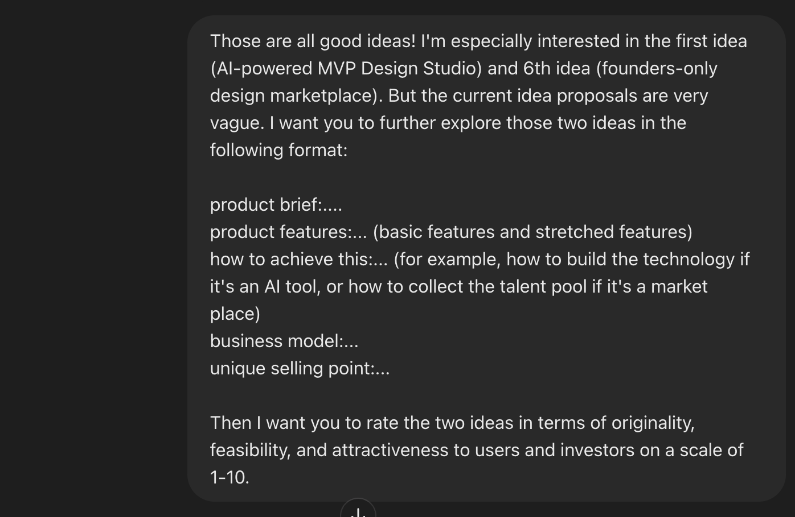
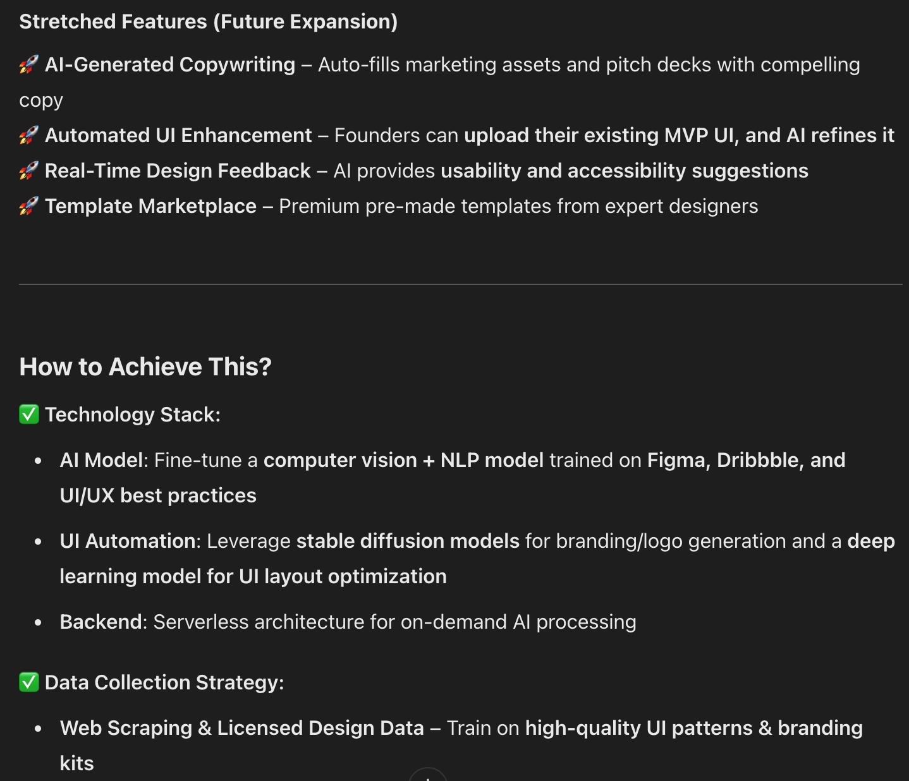
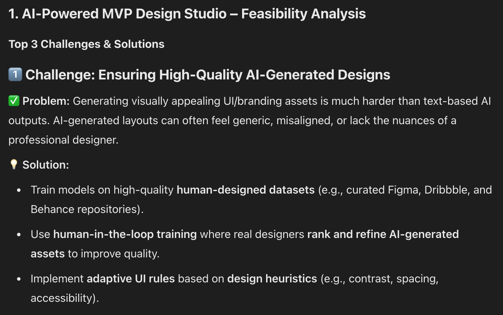

Creativity in Artificial Intelligence
Large Language Models (LLMs) have been intensively used in a lot of productivity settings, and they are notably good at data analysis, problem solving, and knowledge retrieval and synthesis. While they are often assumed to be useful for idea generation, their actual strengths and limitations in producing original and feasible ideas remain underexplored.
Drawing inspiration from research on creativity in Artificial Intelligence tools, I set out to investigate LLMs’ capabilities in creative idea generation through a human-machine collaborative ideation session. Through multiple experiments, I aim to understand which collaborative role played by LLM is the most effective and inspring in the ideation setting.

The Models I’m Testing With
For the experiments, I will be testing a mix of models to compare their capabilities, biases, and effectiveness in different ideation roles.
- GPT-4 (OpenAI)
- Claude 3 (Anthropic)
- DeepSeek-V2 (DeepSeek AI)
LLM Collaborative Roles In Human-machine Collaboration
To break down LLMs’ contributions to idea generation, I categorize their roles into Generator, Prompter, and Refiner.
- The Generator role puts the LLM in the driver’s seat, allowing it to take full control of idea creation with minimal human input.
- The Prompter role flips the dynamic, positioning the LLM as a guide that stimulates human creativity by posing thought-provoking questions and suggestions.
- The Refiner role focuses on polishing and enhancing existing ideas given by human, helping to improve clarity, coherence, and feasibility.
By testing these roles across different models, I aim to uncover which approach is the most effective in a collaborative ideation setting.
Experiments with LLMs
The base prompt:
Many small-scale startup founders have strong technical skills but lack design expertise within their teams. They need cost-effective, high-quality product and graphic design support but have a limited budget. Hiring a full-time product or graphic designer is not cost-effective for them at this stage, as they are still testing their MVP and validating product-market fit.
Their primary goal is to get fundamental design work done—whether for their product UI, branding, or marketing—so they can present a functional and visually coherent version to early users and investors. They are not looking for perfect, highly polished design but rather a solid starting point that can be refined later once they achieve growth.
Please generate profitable product ideas (tools, platforms, or services) that effectively address this gap. The solution should be: - Descent quality of design that is visually appealing and credible enough to engage early users and investors - Affordable compared to hiring a dedicated designer - Fast and efficient for founders who need quick, functional results - Scalable so it remains profitable while serving multiple startups
The target customers are small-scale startup founders who prioritize functionality over perfection but still want fair-quality design to establish credibility in the early stages.
LLMs as idea generators
On top of the base prompt, I told the LLM that >“I want you to take the dominant role in the idea generation process, meaning that you are the one who’s responsible for thinking of as many ideas as possible, while also trying to maintain the originality and feasibility of the idea. I’m going to be the judge, and will reward you if the ideas you are generating satisfy the standards I described above.”
I started with GPT-4. For the first run, it came up with 8 ideas. All ideas are of fair quality, meaning that they possess the basic feasibility and attractiveness to early users and investors. The response follows a well-organized structure, consisting a description, key features, a revenue model, and an explanation of why it works.
However, most ideas are very generic and homogeneous. Other than being framed differently, the core of the ideas remains the same. Boiling down to its core, the 8 ideas can be reorganized and combined into 3. All of them except 2 are heavily AI-focused, with very similar p/ roduct offerings.
Here’s a glimpse of GPT-4’s response.

Then I manually selected two ideas and prompted the model to expand on them. This time, I provided a clear structure and asked the model to self-evaluate its own responses based on originality, feasibility, and attractiveness. Additionally, I requested a feasibility analysis, outlining the top technical or social challenges and potential solutions. In the end, the model generated an overall idea quality summary, synthesizing the ratings across different aspects.




I tested the same prompt in Claude 3 and Deepseek-v2, each yielding very similar ideas and responses.
Summary
Based on the test results, I found that LLMs are more effective at expanding concrete ideas—answering questions and elaborating on details—rather than generating truly innovative or groundbreaking concepts. During the ideation process, the ideas generated by different Large Language Models tended to be quite homogeneous, with similar core offerings and technologies appearing across multiple suggestions.
However, LLMs are exceptionally good at idea expansion, helping to identify blind spots that humans might initially overlook. When I asked the model to list key and stretch features, along with potential challenges, its insights were particularly valuable in providing a comprehensive and nuanced understanding of the market landscape.
From this observation, my key takeaways are: * When crafting prompts, place strong emphasis on defining your target market and customers. The more niche and specific the problem space, the more original and unique the generated ideas will be. * Embrace LLMs as great helpers in the initial brainstorming stage. While they may not be the best at generating breakthrough ideas, they provide valuable insights on product development that humans might easily overlook.
In the next post, I’ll be introducing LLMs’ strengths and weaknesses as prompter.